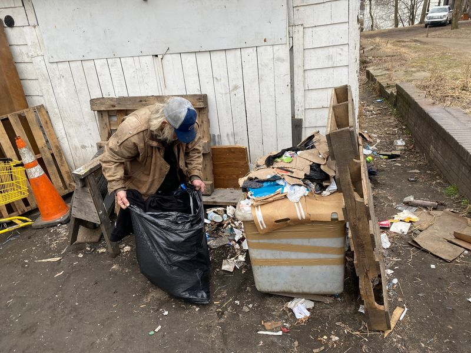

Timeline photos
HOUSELESS MOVEMENT CHARITY TRASH CLEANUP CREWS
I truly believe we all have a place in society. Society just needs to let us have our place.
I'm going to be talking more about a brand new charity we just created: @[100069807557908:2048:Houseless Movement Charity]. The majority of the board members will always be homeless people. That is baked into our bylaws.
The fundamental beliefs of the charity are: acceptance, integrity, empowerment and community.
We aren't trying to force homeless people into being something they are not. We are just trying to help them live their lives in ways that are better for themselves while being a force of good in the community.
One thing all homeless people want, from time to time, is money.
They don't usually want 40 hours a week money.
They need $20 here, and $40 there.
You might jump to conclusions about what people do with that money. And sometimes you're right. Sometimes the money is used for drugs or alcohol. It's often used for cigarettes.
You might be surprised to know that sometimes it's used for gambling. Some homeless people have quit drugs so that they can spend every last penny at the Tap Tap machines.
But more often than not, after I pay a homeless person for a job, they will sometimes ask me to take them to the Dollar Store, where they get phones, food, toiletries and all kinds of stuff regular people want or need. It's not drugs or alcohol. Sometimes it's a coloring book and pens.
I feel like this desire for occasional money could align very nicely with needs in our community. The first place that comes to mind is trash cleanup projects.
Homeless people are often eager to pick up trash. I regularly hire homeless people for this kind of work.
So, our charity got an idea: What if we took our trash cleanup services on the road? What if we started cleaning up trash at highway offramps, parks, or any place that has trash that's been sitting around that no one has touched.
THIS IS WHERE WE NEED YOUR HELP: We'd like to know where there is trash in Akron that you'd like to see picked up. Please list locations you are aware of in the comments, and we'll put them on our list.
We will be paying $2.50-$5.00 per bag a person fills up. The price will depend on the size of the material. Smaller materials will pay more. Larger materials will pay less.
That will be our first expense.
Next, we will need trash bags. We use strong 33-gallon bags. The expensive contractor bags aren't typically necessary. If you'd like to donate trash bags to this cause, that would be wonderful.
And then our dumpster currently costs about $80/month for one pick up a week. Depending on how this goes, we might need to increase the number of pickups.
I feel like this program resonates with a variety of people:
* Homeless people get jobs that fit their lifestyle.
* Supporters like to see people empowering themselves to be productive.
* The entire Akron community benefits by seeing less trash.
If you'd like to learn more and possibly contribute to this cause with donations of trashbags or funds, you can go here for more information:
https://houselessmovement.org/donate/